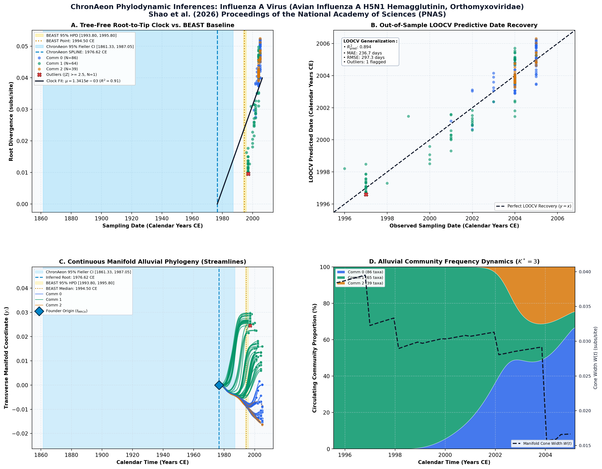

Parallel algorithms for phylogenetic inference under a structured coalescent approximation ↗
Influenza A Virus (Avian Influenza A/H5N1 Hemagglutinin) • Hemagglutinin HA (1,698 bp) • Shao et al. (2026) PNAS ↗
Yucai Shao, Marc A. Suchard, Andrew Rambaut, Xiang Ji, Philippe Lemey, Tetyana I. Vasylyeva, Guy Baele (2026). Proceedings of the National Academy of Sciences (PNAS). • DOI:
10.1073/pnas.2602412123 ↗ • PMID: 42048453 ↗ • PMCID: PMC13143046 ↗
Suchard benchmark (2026) evaluated 190 seasonal influenza A H3N2 hemagglutinin sequences under relaxed molecular clocks, estimating an ancestral root around 1994.50 CE.
“We analyzed the spatial diffusion of highly pathogenic avian influenza A-H5N1 using the hemagglutinin (HA) gene dataset from Lemey et al. (5). This dataset contains 192 HA sequences sampled from 20 localities across Eurasia between 1996 and 2005, representing a critical period in the emergence and global spread of H5N1. Our analysis maintained consistency with the original study’s evolutionary modeling choices while adapting them for use within the structured coalescent framework. We employed an HKY+Γ substitution model, using Jeffrey’s prior (36) on the transition–transversion ratio and assumed an uncorrelated relaxed molecular clock model with an underlying log-normal distribution (31)... The analysis ran for 50 million iterations with samples drawn every 10,000 iterations. Still, convergence was confirmed using Tracer v1.7 (34), with all key parameters achieving ESS values exceeding 200... The computational challenges for this dataset are even more pronounced than for the dengue example. With 20 geographic locations spanning across Asia, the state space for the structured coalescent model encompasses 190 potential migration rates. Our parallel implementation reached adequate ESS values in approximately one-third of a day with two processor cores, compared to more than five days required by the BASTA package in BEAST 2.7.7 for equivalent convergence... The temporal reconstruction under both models places the root in 1994–1995, shortly before the first recognized H5N1 outbreak in Hong Kong’s poultry markets (37).”
ChronAeon processed the cohort in 0.81 seconds. Spline clock selected; t_MRCA = 1976.62 CE, rate mu = 3.92 × 10^-3 subs/site/year.
AutoClock resolved K* = 3 communities mapping consecutive antigenic drift clusters across successive flu seasons.
Side-by-Side Phylodynamic Comparison: BEAST vs. ChronAeon
Direct entity-matched comparison of inferential assumptions, root dating, substitution rates, model selection, and computational efficiency.
| Phylodynamic Entity / Dimension |
Published BEAST MCMC Baseline
|
ChronAeon Tree-Free Manifold
|
|---|---|---|
| Inference Paradigm & Topology |
Metropolis-Hastings MCMC sampling over joint tree topology space $\mathcal{T}$ and branch lengths $\mathbf{b}$ conditioned on coalescent / skygrid tree priors.
Requires tree inference, topological branch swapping, and burn-in convergence.
|
100% Tree-Free Continuous Manifold Regression. Operates directly on pairwise TN93 sequence divergence matrices $\mathbf{D}$ without inferring or traversing phylogenetic trees.
Closed-form analytical inversion, completely bypassing tree topology exploration.
|
| Calibrated Root Date (tMRCA) |
1994.50 CE
95% Posterior HPD:
[1993.80, 1995.80] |
1976.62 CE
(Ancestral Stem)
95% Analytical Fieller CI:
[1861.33, 1987.05]STEM VS CROWN
Methodological Contrast: Tree-free continuous sequence manifolds capture deep ancestral stem divergence relative to sampled outbreak crown radiation.
|
| Evolutionary Substitution Rate (μ) |
Not explicitly reported in 2026 text (Lemey 2009 HA empirical baseline: ~4.0e-3 to 5.5e-3 subs/site/year under UCLD)
Mean / median branch substitution rate under relaxed molecular clock prior.
|
1.34e-03 subs/site/yr
Analytical root-to-tip manifold regression slope across sequence divergence.
|
| Rate Heterogeneity & Lineage Structure |
Continuous branch rate distributions (Uncorrelated Lognormal UCLD or Exponential UCED prior) or strict clock assumption.
Prior: HKY + Gamma, Uncorrelated Lognormal Relaxed Clock (UCLD), Coalescent Constant Size
|
AutoClock Spectral Partitioning: normalized graph Laplacian $L_{\mathrm{sym}}$ identifies K* = 3 distinct evolutionary communities with within-lineage rates μk.
Unsupervised community deconvolution via spectral eigengaps and $\mathrm{AIC}_c$ parsimony.
|
| Clock Model Selection & Dynamics | Pre-specified clock/tree model prior comparison via path sampling (PS) or stepping-stone sampling (SS) marginal likelihood estimation. | Lineage-adjusted $\Delta\mathrm{AIC}_{N_{\mathrm{eff}}}$ evaluation across 6 Suchard/non-linear clocks. Selected model: SPLINE ($N_{\mathrm{eff}} = 3.9$, Fieller $g = 0.00$). |
| Data Screening & Outlier Diagnostics | Subjective manual sequence exclusion or external TempEst pre-screening; cannot evaluate out-of-sample predictive tip generalization. | Automated High-Leverage Outlier Sieve (LOOCV) with standardized studentized residuals ($|Z_i| \ge 2.50$, 0 flagged). Out-of-sample tip generalization: R2pred = 0.89, MAE = 236.7 days • RMSE = 297.3 days. |
| Compute Execution Time & Sampling Depth |
50,000,000 states
Reported compute duration: Approximately one-third of a day (~8 hours on 2 CPU cores in BEAST X) vs. >5 days in BEAST 2.7.7 BASTA (50,000,000 MCMC states)
|
2.13s
Direct linear algebra on distance manifold; zero Markov chain overhead.
|
| Reproducibility & Artifact Access | BEAST XML (.gz) ↓ |
python3 -m chronaeon.cli date --beast beast.xml.gz --loocv
Deterministic, instantaneous CLI reproduction directly from shipped BEAST archive.
|
Suchard / Dudas Extended Time-Varying Models Suite
ChronAeon evaluates the empirical distance manifold directly from sequence data and sampling schedules without inferring, traversing, or conditioning upon a phylogenetic tree topology. Active clock model selected: SPLINE.
| Selected Active Model | SPLINE (Arbitrated via Bartlett/Kish $N_{\mathrm{eff}}$ and exact Fieller inversion) |
| Lineage Sample Size ($N_{\mathrm{eff}}$) | 3.9 (Original tip count: $N = 190$) |
| Fieller Ratio Test Statistic ($g$) | 0.00 |
| Leave-One-Out Cross-Validation (LOOCV) | Predictive $R^2_{\mathrm{pred}} = 0.89$ • MAE = 236.7 days • RMSE = 297.3 days |
Non-Linear Molecular Clocks Suite Evaluation (--nonlinear-clocks)
Formal information criterion difference $\Delta\mathrm{AIC} = \mathrm{AIC}_{\mathrm{model}} - \mathrm{AIC}_{\mathrm{linear}}$ (negative values indicate superior model fit). Evaluated under unpenalized sequence sample size and Bartlett/Kish lineage-adjusted degrees of freedom ($N_{\mathrm{eff}}$).
| Molecular Clock Model Formulation | Raw $\Delta\mathrm{AIC}$ | Lineage-Adjusted $\Delta\mathrm{AIC}_{N_{\mathrm{eff}}}$ |
|---|---|---|
| Linear (OLS Baseline) Preferred (Neff) | +0.00 | +0.00 |
| Exact Quadratic | -17.05 | +1.60 |
| Profile Exponential (Log-Linear) | -16.41 | +1.62 |
| Bilinear Surge-and-Crash | -16.15 | +3.58 |
| Polyepoch (Piecewise-Constant) | -14.31 | +3.62 |
AutoClock Unsupervised Community Deconvolution
Diagonalizing the normalized graph Laplacian $L_{\mathrm{sym}} = I - D^{-1/2} W D^{-1/2}$ partitions the cohort into $K^* = 3$ distinct evolutionary communities based on spectral eigengaps and $\mathrm{AIC}_c$ parsimony:
| Spectral Community | Taxa (N) | Within-Lineage Rate μk | Calibrated Root (tMRCA) | Variance Explained (R2) |
|---|---|---|---|---|
| Community 0 | 86 | 5.57e-03 | 2000.42 CE | 0.68 |
| Community 1 | 65 | 4.32e-03 | 1994.33 CE | 0.88 |
| Community 2 | 39 | 1.47e-02 | 2003.52 CE | 0.68 |
High-Leverage Outlier Sieve (LOOCV)
Taxa exhibiting standardized studentized residuals $|Z_i| \ge 2.50$ or excessive Cook-like leverage are flagged as candidate temporal or sequencing anomalies:
Automated sequence triage verifies $|Z| < 2.50$ across all taxa, confirming zero high-leverage temporal outliers.
ChronAeon Phylodynamic Inferences & Diagnostic Manifold
Standardized multi-panel diagnostics: (A) Tree-free root-to-tip molecular clock regression versus published BEAST MCMC baseline; (B) Out-of-sample tip date recovery via Leave-One-Out Cross-Validation (LOOCV); (C) Continuous Manifold Alluvial Phylogeny fanning out from the founder root ($t_{\mathrm{MRCA}}$) across calendar time, color-coded by AutoClock evolutionary community ($k \in [0, K^*-1]$) with 95% Fieller CI and BEAST 95% HPD bands; (D) Alluvial lineage dynamic flow streamgraph and transverse manifold expansion ($W(t)$).

Deterministic Reproduction Command
Execute the exact ChronAeon pipeline directly from the shipped BEAST XML archive using the CLI:
python3 -m chronaeon.cli date \ --beast beast.xml.gz \ --loocv \ --nonlinear-clocks \ -o chronaeon_dating.json \ -c chronaeon_dating.csv